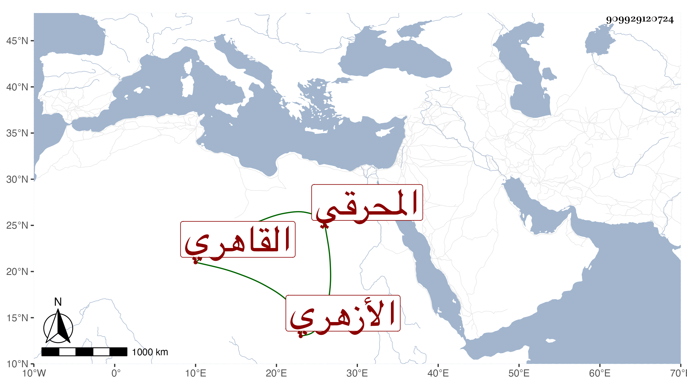

0902Sakhawi.DawLamic.ITO20230111-ara1.EIS1600.909929120724
Biography ID: 909929120724
710
عبد القادر بن صدقة بن الشرف محمد المحرقي الأصل القاهري الأزهري أخو عبد الرحيم وخادم عباس الماضيين وزوج أم الفضل ابنة الحاجة مهجا قريبة الوالدة . ولد في سنة خمس وثمانين تقريبا وسلك بعد شيخه طريق الزوار وصار يدروز ويطبخ في كل سبت أما عدسا أو نحوه لزائري الشيخ عبد الله المنوفي فاشتهر بذلك مع الايثار على نفسه والتقنع بأدنى جزء والحال في تناقص من هذا وشبهه ، وهو ممن سمع قديما ختم البخاري في الظاهرية القديمة ، وتعلل مدة ثم مات في ربيع الأول سنة ست وتسعين وصلى عليه بالأزهر وذكروه بخير وخلف ذكرا وأنثى ثم ماتا في الطاعون رحمه الله وإيانا .
